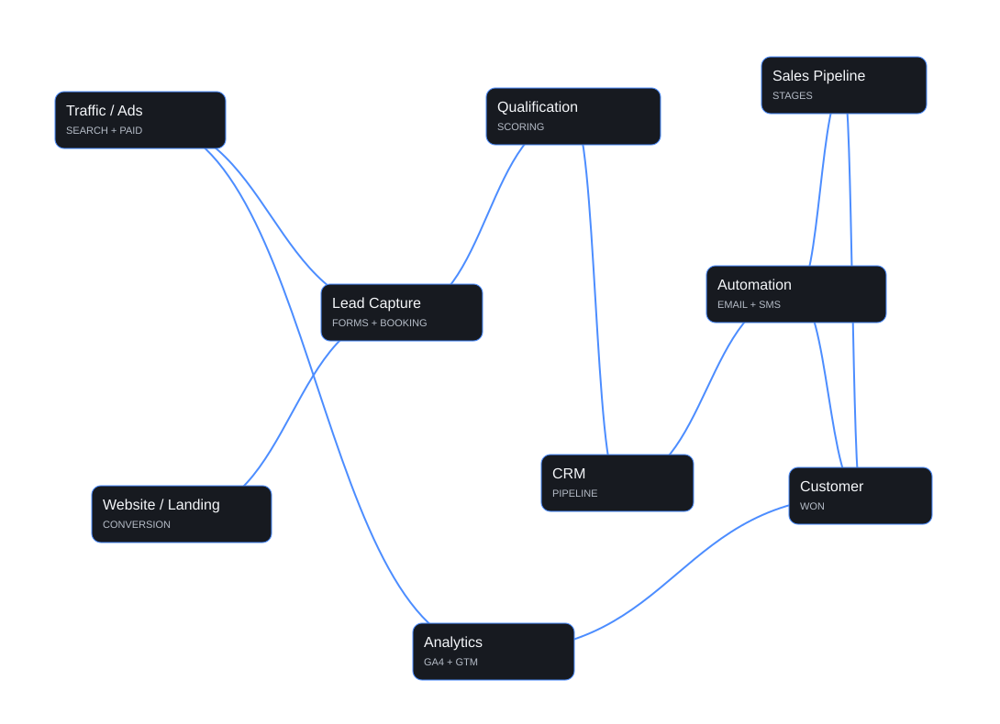

A form comes in at 7:40 PM. Nobody sees it until morning.

FOR HEALTH, WELLNESS & AESTHETICS
Turn more leads into booked visits
I connect your marketing, follow-up and booking. Your team gets clear next steps. You see which leads become clients.
20 minutes · No pressure · Find out if a Diagnostic makes sense
Try the Growth OS Scope EstimatorYour system, in your name. · 8 years working with medical and wellness practices
Rahmel Dela Cruz · Founder, Optivue Digital
WHO THIS IS FOR
Getting leads, but too few bookings?
Here's where they usually get lost.
The front desk means to call back. Then the phones ring.
Your ad report says one number. Your calendar says another.
A new client books. Nobody knows which ad sent her.
Seen any of these? Find your gaps in 90 seconds →
Rent your marketing system, or own it?
Many agencies build your system inside their own software account. You use it while you pay. When you leave, the workflows, pipelines, and history often stay behind.
I build everything in your name: your website, CRM, workflows, tracking, ad accounts, and data. If we stop working together, it all stays with you and keeps running.
| Renting (many agency sub-account setups) | Owning (Optivue) |
|---|---|
| Built in the agency's software account | Built in your own accounts |
| Leave, and the workflows often stay behind | Leave, and everything stays with you |
| Software cost often bundled into the fee | You pay software directly, and see what you pay for |
| You depend on the agency to run it | Documented, so anyone qualified can run it |
Where to start
Fix follow-up before adding more leads.
Slow replies cost you bookings. Give your team a clear path from first contact to first visit.
- Set a reply target for each new lead.
- Keep calls and forms in one place.
- Make the next booking step clear.
- Show your team which leads need a reply.
- Track which leads book and attend visits.
Growth OS
Connect each step from lead to booked visit.
Five connected stages.
Get the right local leads.
I connect local search, Google Business Profile and paid campaigns to clear booking pages. Your plan sets the channels.
Google AdsLocal SearchGoogle Business Profile
How it works
Diagnose. Build. Improve.
Diagnose
I review your website, calls, forms, CRM, follow-up, booking and tracking. You get a 90-day plan with clear priorities.
Build
I build the fixes your plan puts first. These cover booking, tracking, lead routing, CRM stages and follow-up.
Improve
Each month, I review the results. I fix the next gap.
Results depend on access to your systems, your team's follow-up, booking capacity, and budget. I'll be clear about what I control and what I don't.
Who I Work With
Built for businesses where an appointment is the sale.
My main focus is health, wellness, and aesthetics businesses: medical wellness and aesthetics practices, med spas, weight-loss and hormone practices, chiropractic and allied health, and functional wellness clinics. I also take on select consulting, training, and service businesses with the same challenge: leads arrive from different places, follow-up is uneven, and it's hard to see what happens between the first inquiry and a paying client.
Work lab
What I build.
Example views show how leads, follow-up, bookings and reports connect.
Lead routing and consent-based follow-up
Landing pages with a clear next step
Track the booking path with GA4 and GTM
Help local clients find your business
Reporting
Reporting, before and after tracking.
Same dashboard idea, different evidence. Before tracking, the important actions are disconnected. After tracking, events, sources, and funnel steps form one measurable path.
Tracking changes what the report can prove.
Without event mapping, reporting stops at traffic. Once the important actions are named and connected, the report follows the path from source to conversion and shows where handoffs break.
- BeforeTraffic exists, but the conversion path is incomplete.
- AfterEvents, sources, funnel steps, and attribution are connected.
Pricing
Clear pricing. One step at a time.
Start with a Diagnostic. Build only what it shows you need. All prices in USD.
- 1 Diagnose · 1–2 weeks
- 2 Build · 90 days
- 3 Improve · monthly
Growth Systems Diagnostic
From $1,500 · one-time
Find your biggest gap and get a 90-day plan.
7–10 business days after intake and access. Paid upfront.
Growth Systems Diagnostic
What's included
- Lead-to-booking review: How leads arrive. I test your contact and booking paths as a new lead would.
- CRM and follow-up review: How inquiries are logged, assigned, and followed up.
- Tracking review: What your reports can and can't see.
- Baseline numbers: Reply time, lead-to-booking rate, and show rate, so we can measure change later.
- Your 90-day plan: A written report of your top gaps, ranked. Do now, do next, don't do yet. A build estimate and a 45-minute walkthrough call.
Timeline and payment
7–10 business days after payment, intake, and access. Paid upfront. Price covers one location. Multi-location is quoted after the Fit Call.
What I need from you
View access to your website, CRM, booking tool, analytics, and ad accounts. A 20-minute intake call.
Not included
Building or changing anything. Legal, privacy, or compliance review.
You pay for diagnosis, priorities, and a plan you keep. If a simpler fix solves it, I'll recommend it. If your follow-up isn't ready for more leads, I'll tell you before you spend more on ads.
90-Day Growth Foundation Launch
From $7,500
Build the connected system, owned by you.
Paid in three milestones.
Starts after your Diagnostic
90-Day Growth Foundation Launch
Typical scope. Your exact scope is set after your Diagnostic.
What's included
- Booking path: One landing page or booking path. Mobile-first, with form and booking connected.
- CRM setup: A pipeline with up to 6 stages, from inquiry to booked visit. Lead routing to your team.
- Follow-up: Up to 2 consent-based follow-up sequences. Missed-call and after-hours replies.
- Tracking and reporting: Tracking for calls, forms, and bookings, using first-party data where possible. One dashboard from lead to booking.
- Optional AI receptionist or chat: Connected to your CRM and booking, if it fits your clinic.
- Ownership handoff: Built in your accounts. Written documentation and two recorded walkthroughs.
- Post-launch fixes: 30 days included.
Timeline and payment
90 days. Three installments: 50% to start, 25% on day 30, 25% on day 60.
What I need from you
Admin access, approvals within 2 business days, and one staff contact for testing.
Not included
Extra pages or locations, ad spend, software fees, and migrating old CRM data.
Growth Operations
From $3,500/month
After the buildKeep improving, month by month.
3-month minimum, then quarterly.
Starts after your Foundation Launch
Growth Operations
Typical monthly scope. Final scope is agreed after the Foundation Launch.
What's included
- Monthly improvement: A review of your numbers and your biggest gap. Up to 4 agreed improvements per month.
- Ad management: Up to 2 channels, where ads make sense. Ad spend is separate.
- Reporting: A monthly report on leads, bookings, and what changed. A 45-minute review call.
- Support: Reply within 1 business day, Monday to Friday.
Timeline and payment
Billed monthly in advance. 3-month minimum, then quarterly.
What I need from you
Timely approvals and access to your ad and CRM accounts.
Not included
Ad spend, new locations or service launches, and major rebuilds.
Need upkeep only? Systems Care from $350/month.
Systems Care
What's included
- Monthly checks: Forms, booking paths, and automations tested.
- Small fixes: Up to 1 hour per month.
- Support: Reply within 2 business days, Monday to Friday.
Timeline and payment
Billed monthly. For systems I built.
Not included
Ad management, new pages, and new automations.
Multi-location or complex setups get a custom proposal. Ad spend, software, SMS/email, and call tracking are paid directly by you.
You pay for diagnosis, priorities, hands-on work, and a system you own. If a simpler fix solves it, I'll recommend it. If your follow-up isn't ready for more leads, I'll tell you before you spend more on ads.
Founding Clinic Program
Working fit
Clear expectations before work begins.
Optivue is a fit if
- You run a health, wellness or aesthetics business with space for bookings.
- You get leads or plan to generate them.
- You provide access to your website, CRM, booking, and call data.
- Your team wants to improve follow-up.
- You want systems you own and honest reporting.
Optivue is not a fit if
- You only want a website or ads in isolation.
- You want guaranteed patient numbers.
- You can't provide access to your systems.
- Your team lacks time to answer leads or book visits.


How I work
Audit first. Strategy next. Then systems.
I'm Rahmel. I build and manage your website, tracking, CRM and follow-up. You work with me throughout the project.
My eight years of work cover medical, wellness, consulting and other service businesses. I focus on the path to a booked visit.
I work with up to four businesses at once. I handle your build and answer your questions. I tell you before any handoff.
FAQ
Questions before you start.
Why is the Diagnostic paid?
You pay for a plan based on your systems and data. The plan shows what to fix first and which spending to delay.
Do you guarantee more patients?
No one responsibly does. Results depend on demand, your offer, booking capacity, and how your team follows up. I commit to a defined process, clear scope, systems you own, and honest reporting.
When should I spend more on ads?
Check the booking path first. The Diagnostic shows whether you need more leads or better follow-up.
Do I own everything you build?
Yes. Your ad accounts, website, CRM, tracking, workflows, data, and documentation stay yours.
What do you need from my team?
Access to your systems, prompt approvals, and a team ready to follow the new process.
Another provider quoted $999 a month. Why the difference?
Scope affects price. I review and build the full path from lead to booked visit. For ads alone, consider a provider focused on ad management.
Next step
Find the next step toward more booked visits.
Tell me how your team handles leads and bookings. In 20 minutes, I help you decide whether a Diagnostic fits your needs.